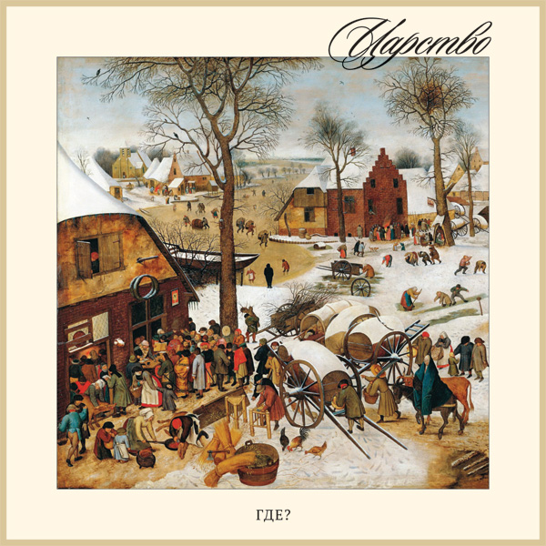

Юрий Шевченко · ГДЕ? · Царство
Мистерия

Яндекс.Музыка · VK · Bandcamp · iTunes · Google Play · Deezer · Spotify
Руслан Гончаров: тексты (кроме 4 — Н. Гумилёв), музыка (4), вокал (3), бэк-вокал (2, 7, 8, 10).
Юрий Шевченко: музыка (кроме 4, 10), вокал, блокфлейта, сведение, мастеринг, вёрстка обложки.
Антон Бессонов: музыка (10), бэк-вокал (10), аранжировки, саунд-дизайн, гитары, запись маточина (7).
Дина Галузо: вокал, бэк-вокал.
Владимир Яроцкий — варган (2).
Бо — маточин (7).
Роман Кондратьев — запись маточина (7).
Василий Ткач, Дмитрий Сыркин — запись трембиты (7).
Дмитрий Авраменко — вторая соло-гитара (10).
На обложке — «Перепись в Вифлееме» Питера Брейгеля Младшего.
Дата релиза — 28 февраля 2018 г.